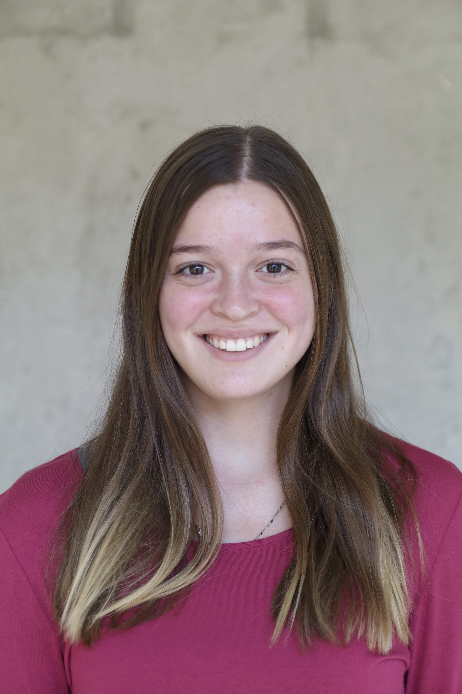

Madilyn Schott, journalist and animal scientist

Interested in making a difference for both people and animals
Hello! I’m a convergence journalist and animal scientist at the University of Missouri. From my years as a student, I have gained immense newsroom experience and animal handling experience. I'm enthusiastic to get out in the world and make a difference!
I am looking to make an impact on endangered species conservation by creating content that raises awareness on the issue. I want to encompass all of my skills to make a positive influence on both people and animals. Check out my projects, take a look at my resume, and shoot me a message!

Learn more about me!
I go by the nickname Madi as well as Madilyn.
I am a double major in animal science and journalism with a minor in captive wild animal management. I plan to graduate in May of 2024. During my time at Mizzou, I want to leave my mark.
I have been heavily involved with numerous organizations across Mizzou's campus. I love getting involved and working hard. I'm passionate about helping others and building connections with anyone that I meet.
I have learned a lot during my time here. There have been many influential people along the way that I am very thankful for. I want to help others just as they have helped me.